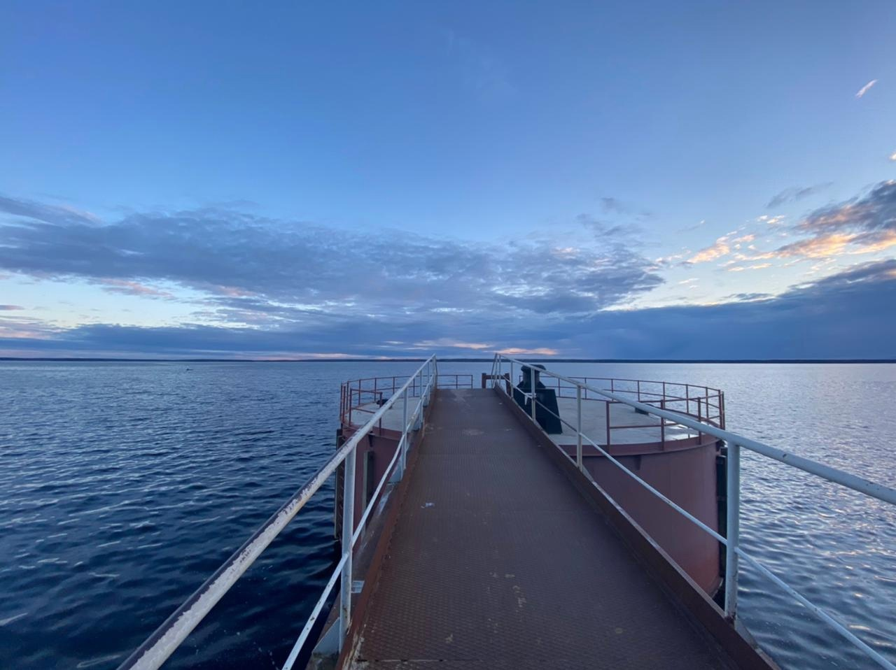

∨
Круглый причал, построенный в 1959г. для испытаний атомного ледокола "Ленин". Здесь проходили и проходят испытания и другие известные суда: океанское спасательное судно "Памир", первая туристическая подводная лодка "Садко", судно ледового класса "Всеволод Бобров". В остальное время со Стакана рыбачат и ныряют. Координаты: 60.40306, 28.577015 Пройти сюда можно либо из базы "Манола" либо по берегу
